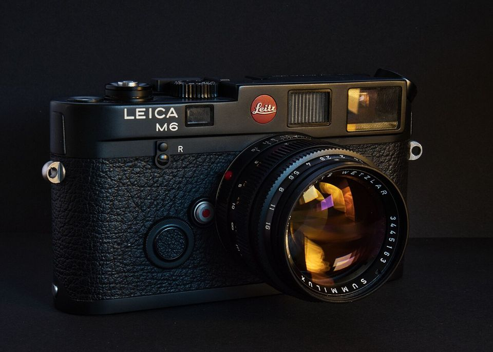
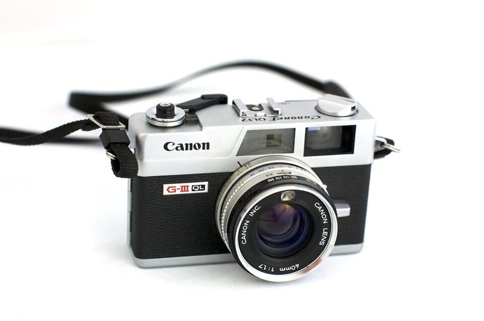
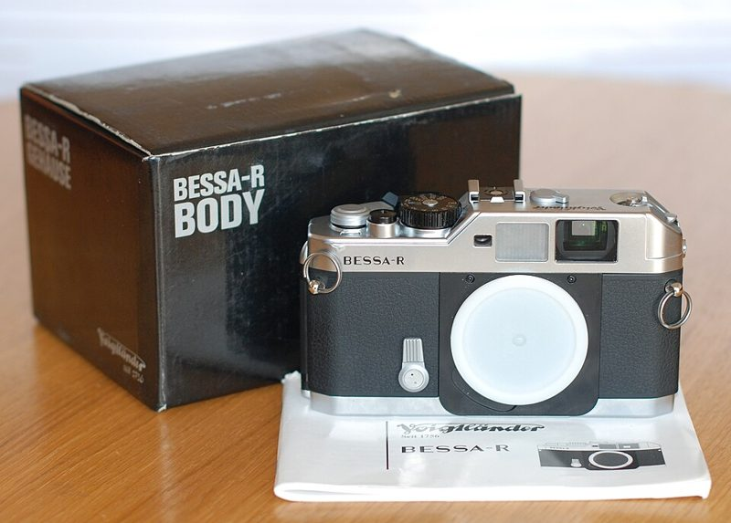
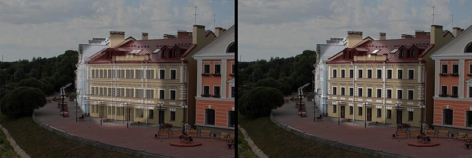

레인지파인더 Rangefinder · 135
뷰파인더 속 두 개의 상을 겹쳐 초점을 맞춥니다. 거울이 없어 작고 조용합니다.




어떻게 찍히나요
뷰파인더 가운데 두 개의 상이 겹쳐 보이고, 초점 링을 돌려 두 상을 하나로 맞추면 초점이 맞습니다. 거울이 없어 셔터를 눌러도 화면이 끊기지 않고 소리가 작습니다. 대신 뷰파인더는 렌즈가 아니라 별도 창으로 보기 때문에 실제 찍히는 화면과 약간 차이(시차)가 있습니다.
이런 분께 추천
- 거리·스냅 사진을 조용히 찍고 싶은 분
- 작고 단단한 카메라를 원하는 분
- 28~50mm 화각을 주로 쓰는 분
좋은 점과 아쉬운 점
- 좋은 점
- 조용한 셔터, 거리 사진에 강함
- 아쉬운 점
- 근접 촬영과 망원이 약함, 시차
대표 기종
Leica M6 · Voigtländer Bessa R · Canonet QL17 GIII · Yashica Electro 35
대략적인 가격
10만 ~ 400만 원 이상
어울리는 필름
중고로 살 때 확인할 것
- 두 상이 위아래로 어긋나지 않는지(무한대 초점에서 확인)

레인지파인더 초점 창 — 왼쪽은 두 상이 어긋난 상태, 오른쪽은 겹쳐서 초점이 맞은 상태. 무한대에서도 위아래로 어긋나면 조정이 필요합니다. - 이중상이 너무 흐리지 않은지
- 천 셔터(라이카 등)에 구멍이나 주름이 없는지